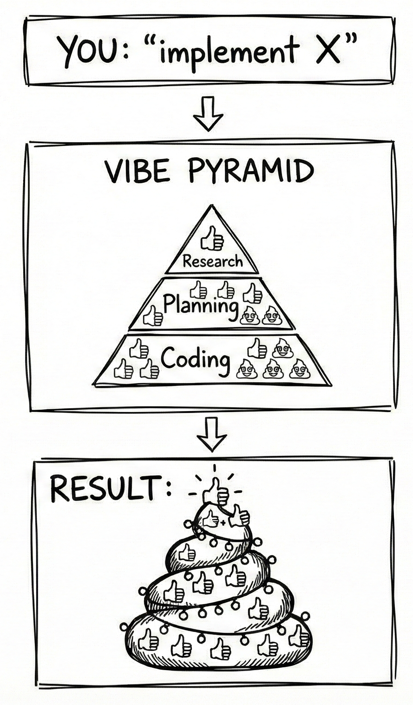

'Please implement this feature' is a vibe-trap.
When you write "implement X," the AI still does research → planning → coding.
You just don't see any of it. You can't course-correct.

Now I use 3 stages:
- Formulate → Write what you want, why, and for whom. Save to a file.
- Research → Ask the agent to scan your repo for reusable code, create user stories, check GitHub, Stack Overflow, Reddit for prior art, and save that to the markdown files. Review the result and remove 80% of it, to keep only essential components.
- Plan → Ask to create data flow diagrams, architecture, test scenarios, avoiding implementation details. Review the plan, and ask to clarify each step that you don't understand. Otherwise it will be a mess. Commit the plan to the repo.
- Implement → Easy. Just mention the plan and ask to implement.
- Iterate → Test everything manually. If it doesn't work, remove the implementation with git, fix the plan and try again.
So
- Your understanding of the codebase is actually higher than before
- There is no emotional connection to the resulting code. You can bash it until perfection.
- Test coverage is growing
Gambling-driven development is still fun, though.
- → Research-Plan-Implement workflow (agents & commands):
https://github.com/mir/maratai/tree/main/claude-maratai-dev - → More on context engineering (DEX):
https://www.youtube.com/watch?v=rmvDxxNubIg - → The project I'm working on:
https://www.linkedin.com/posts/the-mike_datachat-agenticai-data-activity-7378685192091361280-X7BK